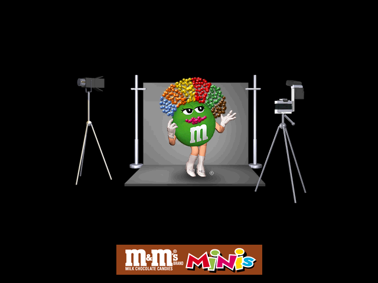
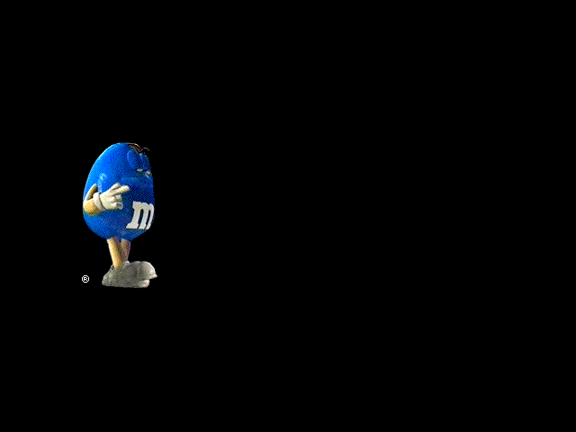
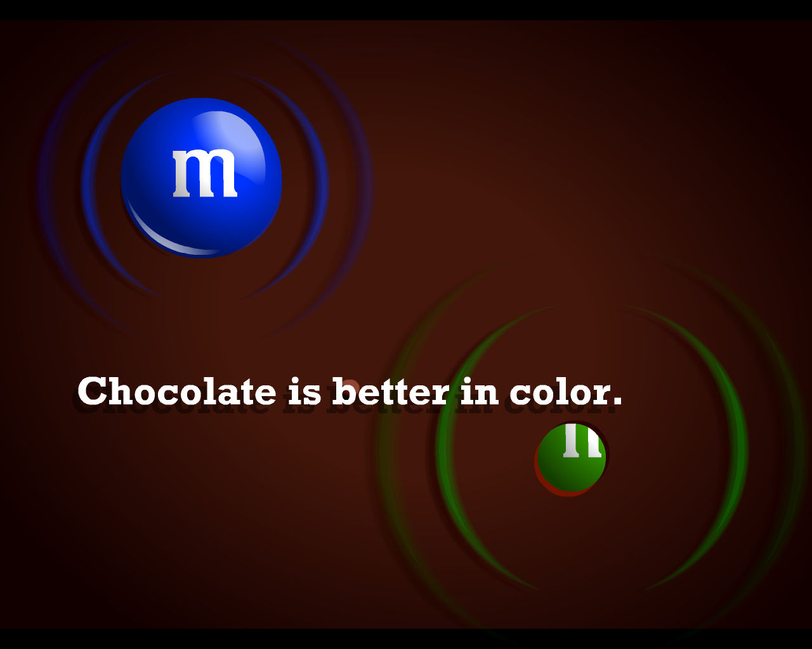
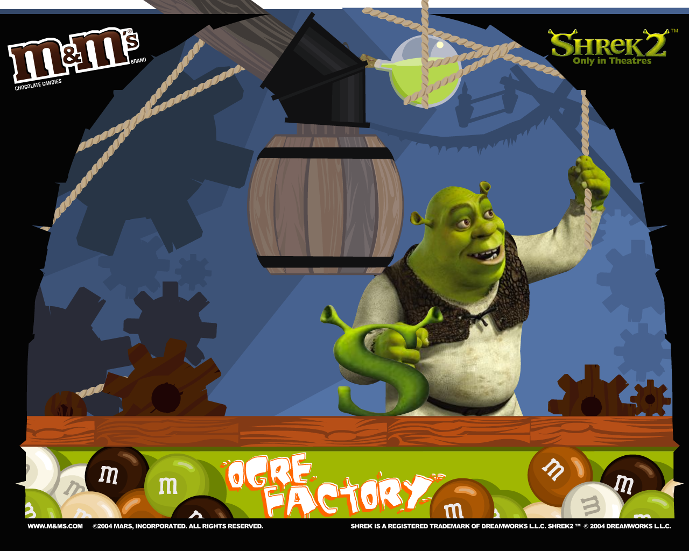

M&M's Screensavers

M&M's Minis

Note: This is a 16-bit program and requires special programs to run on 64-bit Windows, such as otvdm.
Note 2: This screensaver will not properly run on versions of Windows beyond Windows 2000.
DOWNLOAD
 .exe file zipped (1.40 MB)
.exe file zipped (1.40 MB)
M&M's

Note: This is a 16-bit program and requires special programs to run on 64-bit Windows, such as otvdm.
Note 2: This screensaver will not properly run on versions of Windows beyond Windows 2000.
DOWNLOAD
.exe file zipped (1.15 MB)
Chocolate is Better in Color

DOWNLOAD
.exe file zipped (Windows) (1.11 MB)
.hqx file (Mac OS 9) (1.23 MB)
Ogre Factory

A crossover with Shrek to promote Shrek 2.
DOWNLOAD
.exe file zipped (Windows) (1.22 MB)
.hqx file (Mac OS 9) (1.18 MB)
.hqx file (Mac OS X) (1.01 MB)
It's Raining M&M's!

DOWNLOAD
.exe file zipped (Windows) (0.99 MB)
.sea file (Mac OS) (317 KB)
Winter Wonderland

DOWNLOAD
.exe file zipped (Windows) (1.02 MB)
.sea file (Mac OS) (357 KB)